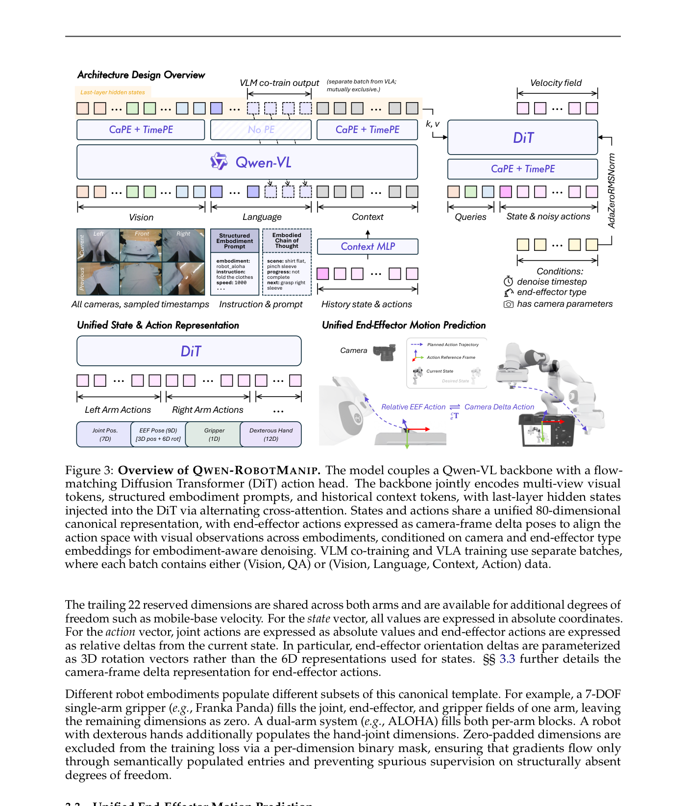
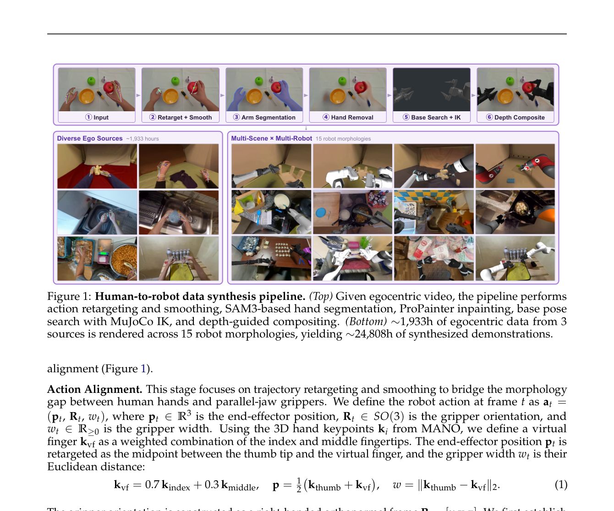
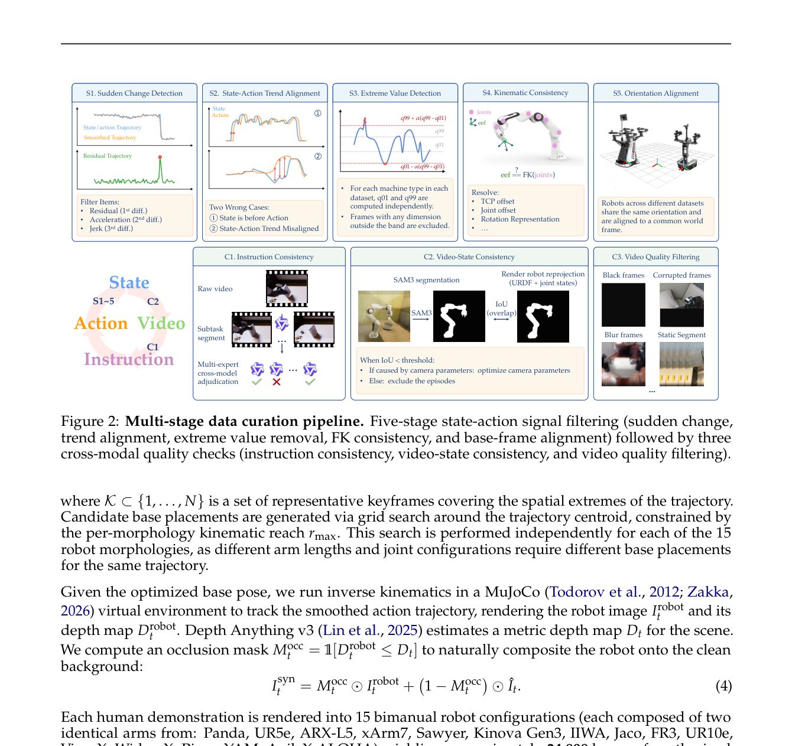
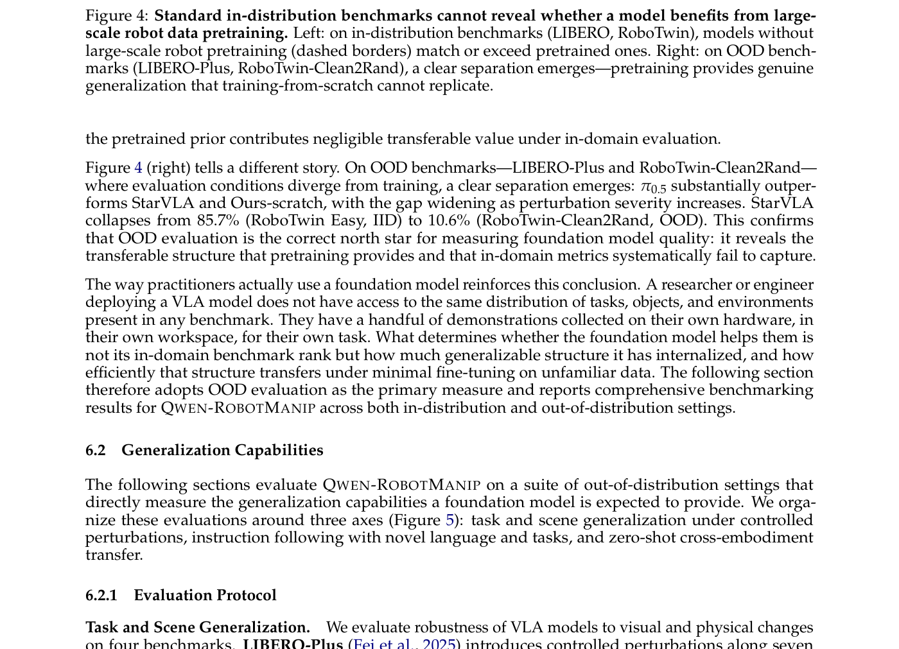
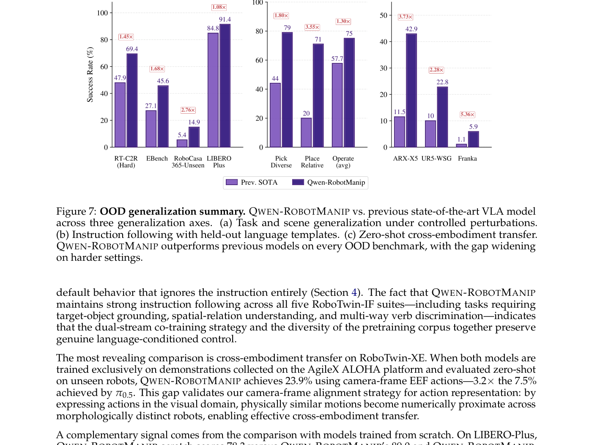
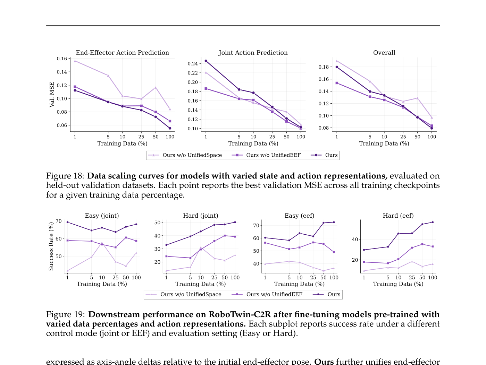

Qwen-RobotManip Technical Report: Alignment Unlocks Scale for Robotic Manipulation Foundation Models
论文笔记: Qwen-RobotManip Technical Report: Alignment Unlocks Scale for Robotic Manipulation Foundation Models
1. 背景信息
- 团队: Qwen Team (阿里巴巴通义)
- 时间: 2026年6月16日
- 代码: https://github.com/QwenLM/Qwen-RobotManip
- 基座模型: 基于 Qwen-VL (Qwen3.5-4B) 构建
2. 关键问题：跨具身体数据的对齐与规模化是耦合的前提条件
Golden Case — 问题是什么？ 想象一个 Franka 机械臂和一个 ALOHA 双臂系统执行"把杯子放到托盘上"的同一个动作。Franka 记录的是 7-DOF 关节角度 + 基座坐标系下的末端执行器位姿；ALOHA 记录的是 14-DOF 关节角度 + 不同坐标系下的双臂位姿。同一个视觉上完全相同的"向右移动 10cm"动作，在两个系统中的数值表达完全不同。如果你把这两份数据简单拼在一起训练，模型不是在学"如何操作"，而是在花费容量去调和冲突的数字约定。数据越多，冲突越大——对齐不是独立的工程选择，而是数据规模化本身的前提条件。
- 动机: Foundation model 在语言和多模态领域成功的核心配方是"异构数据在统一表达下对齐 + 规模化训练"。能否将这一配方应用于机器人操作？
- 之前的方法卡在哪里了:
- 现有机器人数据集 (OXE, DROID, RH20T) 集中在少数遥操作设置中，具身体和任务多样性远远不足
- 跨具身体方法 (π0.5, GR00T-N1) 采用共享架构或统一 action tokenization，但没有让"相同物理运动在不同具身体上数值一致"的表达，导致增加数据只产生干扰而非协同
- 标准 benchmark (LIBERO, RoboTwin) 无法区分"真正的泛化"和"分布内模式记忆"——从头训练的模型在这些 benchmark 上能匹敌甚至超越预训练模型
3. 关键方法：三维度对齐框架 + 人类视频到机器人合成管线

Golden Case — 方法怎么跑？ 以一段人类第一人称视频"手拿杯子放到桌上"为例，完整走一遍 Qwen-RobotManip 的数据和推理流程：
- 数据侧: 人类手部 3D 关键点 → 重定向为末端执行器轨迹 (位置+姿态+夹爪宽度) → Savitzky-Golay 平滑 → SAM3 分割手部 → ProPainter 修复背景 → 对 15 种机器人形态分别搜索最优基座位姿 → MuJoCo IK 解算关节角 → 深度合成渲染得到"假装是机器人在操作"的视频+动作序列
- 表达侧: 这段合成轨迹被映射到 80 维 canonical vector (每臂 29 维: 7 关节 + 9 末端 + 1 夹爪 + 12 灵巧手)，未使用维度 zero-pad 并用 binary mask 排除出 loss
- 推理侧: Qwen-VL backbone 编码多视角图像 + 结构化 embodiment prompt + 历史 context → last-layer hidden states 通过交叉注意力注入 DiT action head → flow matching 生成 camera-frame delta pose 动作 → 4 步 Euler 积分得到动作序列
-
整体架构: 解耦设计——Qwen3.5-4B VLM backbone (感知+推理) + 10 层 DiT action expert (flow matching, D=768, 12 heads)
- DiT 中 cross-attention 交替关注 visual tokens (偶数层) 和 language tokens (奇数层)
- 机器人本体状态通过 2 层 MLP 编码后 prepend 到 noisy action token 序列前
-
三维度对齐:
- Representation Alignment: 80 维 canonical state-action vector + per-dimension binary mask
- 每臂 29 维: joint pos (7) + EEF pose (3 pos + 6D rotation) (9) + gripper (1) + dexterous hand (12)
- 不同具身体填充不同子集，zero-pad 维度通过 mask 排除出 loss
- Motion Alignment: Camera-frame delta pose 表达
- 核心公式: $a_p = \begin{pmatrix} {^c_e}R \cdot {^e_{e^*}}R \cdot {^e_c}R & {^c_e}R \cdot {^e}t_{e^*} \\ 0 & 1 \end{pmatrix}$
- 关键性质: 视觉上看起来相似的动作在数值上也接近，不依赖于具身体的基座坐标系
- CaPE (Camera Positional Encoding) 将相机几何注入 DiT cross-attention (32/64 维给 CaPE, 32/64 给 RoPE)
- Behavior Alignment: In-context policy adaptation
- 将近期执行历史 (observation-action pairs) 作为隐式具身体标识符
- Stochastic context sampling 防止模型退化为"复制最近动作"的 shortcut
- 需要 10+ denoising steps 才能解码上下文信号 (4 步不够)
- Representation Alignment: 80 维 canonical state-action vector + per-dimension binary mask
-
人类到机器人合成管线 (H2R):

- 输入: 约 1,933 小时第一人称视频 (EgoDex 732h + VITRA 247h + EgoVerse 954h)
- Action Alignment: MANO 手部关键点 → 虚拟手指 (0.7 index + 0.3 middle) → 末端执行器位姿 + 夹爪宽度
- Visual Alignment: SAM3 手部分割 → ProPainter 修复 → 基座位姿优化 → MuJoCo IK → 深度合成
- 渲染到 15 种双臂机器人形态，产出约 24,808 小时合成数据
- Action speed alignment: 对不同来源下采样以匹配机器人遥操作速度分布

-
数据清洗管线 (5 阶段):
- S1: 突变检测 (residual + acceleration + jerk)
- S2: State-Action 趋势对齐 (因果不变量检查, 发现 RoboMIND UR 数据 81% 有问题)
- S3: 极值过滤
- S4: 关节-末端 FK 一致性检查
- S5: 基座坐标系和末端朝向对齐
-
双流联合训练: VLA 流 (操作数据) + VLM 流 (视觉语言数据, 约 28M 样本), 9:1 比例
- 目标函数: $L = L_{FM} + 0.1 \cdot L_{VLM}$
- Action expert 每个样本重复 8 次 diffusion step ($K_{repeat}=8$) 以摊销 VLM 前向传播成本
- VL 数据包括: 通用视觉理解、空间感知推理、OCR、多模态知识、指令跟随、具身体中心 VL 数据 (ECoT + 第一人称视频理解 + 2D 轨迹预测)
-
训练细节:
- 预训练: 全量数据, $L_{FM} + 0.1 L_{VLM}$, flow matching 用 Beta(1, 1.5) 采样 timestep
- 后训练 (SFT): 仅 $L_{FM}$, 加 color jitter, 不做数据清洗过滤
- 推理: 4 步 Euler 积分 + Real-Time Chunking (RTC) 隐藏网络延迟
-
Embodiment Prompt (结构化):
embodiment: robot_aloha instruction: Take the toy off the table and put it on the mat. speed: 1000 fps: 30 camera view direction: arm side训练时以 15% 概率随机丢弃 embodiment/speed/fps 字段
4. 数据集：∼38,100 小时全开源操作数据 + 28M VL 数据点
- 训练数据:
| 数据类型 | 具身体类型 | 来源 | 总时长 |
|---|---|---|---|
| 机器人数据 | 单臂 | OXE, RoboMIND, DROID, RH20T | 3,808h |
| 机器人数据 | 双臂 | AgibotWorld-Beta, RoboCOIN, RDT | 6,744h |
| 机器人数据 | 移动/人形 | InternData-A1, Galaxea | 868h |
| 人类数据 | 人手 | EgoDex, VITRA, EgoVerse | 1,933h |
| H2R 合成 | 15 种双臂形态 | 从人类数据合成 | 24,808h |
- 评估数据 (OOD 为主):
- LIBERO-Plus: 7 个扰动维度 (camera, robot, language, light, background, noise, layout)
- RoboTwin-Clean2Rand: Clean 训练 → 随机化测试 (background, lighting, clutter, height, Hard)
- RoboCasa365: 厨房操作 (Atomic/Composite-Seen/Composite-Unseen)
- EBench: 室内移动操作 (26 task types, 794 instances)
- RoboTwin-IF (新提出): 指令跟随, 5 个子任务测试语言控制的真实性
- RoboTwin-XE (新提出): 零样本跨具身体迁移
5. 关键结果：OOD 设置下全面大幅超越 π0.5，证明对齐使规模化生效

- 标准 benchmark (Table 3):
- LIBERO: 99.2% (Context 版), RoboTwin Easy: 93.7%, Hard: 94.0%
- 但作者论证这些指标不可靠：从头训练的模型能达到类似水平

-
OOD Task & Scene Generalization (核心结果):
- LIBERO-Plus: 91.4% vs π0.5 84.4% (+7.0) — Camera 维度 89.9 vs 78.4, Robot 维度 83.9 vs 73.6
- RoboTwin-C2R Hard: 69.4% vs π0.5 47.9% (+21.5) — 保留 86% Easy 性能 vs π0.5 仅保留 66%
- EBench: 45.6% vs π0.5 27.1% (+18.5)
- RoboCasa365 Composite-Unseen: 14.9% vs 次优 5.4% (接近 3x)
-
Instruction Following (RoboTwin-IF, Table 8):
- 平均 72.2% vs π0.5 49.6% (+22.6)
- Pick-Diverse: 79 vs 44, Place-Relative: 57 vs 20, Operate-Tabletop: 93 vs 66
-
Zero-Shot Cross-Embodiment (RoboTwin-XE, Table 9):
- Camera-frame EEF: ARX 42.9%, UR5 22.8%, Franka 5.9%, 平均 23.9% vs π0.5 的 7.5% (3.2x)
- Joint control 跨具身体几乎失败 (<5%), 验证了 camera-frame delta 的必要性
-
RoboChallenge Table30-v1 Generalist Track (Table 14):
- 第一名: 45% success rate / 59.83 process score vs 次名 DM0 37% / 48.43
-
真实机器人 (CobotMagic ALOHA, Table 10-11):
- In-domain: 88.6% vs π0.5 42.9% vs StarVLA 20.0%
- OOD: 87.5% vs π0.5 37.5% vs StarVLA 0.0%
- Few-shot ARX (Table 12): 多数任务超越 π0.5, 仅 130 demonstrations
- Cross-embodiment skill transfer (Table 13): 55.0% vs w/o UnifiedEEF 12.5% (4.4x)
-
消融实验关键发现:

- Action space alignment 决定 scaling law 是否成立 (Figure 18): w/o UnifiedSpace 无法展现 log-linear scaling
- H2R 合成数据 vs 原始 ego 数据 vs 仅机器人数据: Robot-only → +Ego → +H2R 单调递增 (Table 16-17)
- VL co-training 去除后 RoboTwin-C2R Hard 下降 8.2 点, IF 下降 7.0 点 (Table 18)
- In-context adaptation 需要 10+ denoising steps 才有效 (+5.0 over structure prompt), 4 步反而有害 (Table 15)
- UnifiedEEF 是 mixed post-training 的唯一前提: 去掉后 mixed training 直接崩溃到 0% (Figure 22)
6. Insights
6.1 对论文本身的 Comments
-
最核心的贡献不是模型设计，而是"对齐是规模化前提"这个论点的系统性验证。Figure 18 的 scaling curve 对比是整篇论文最有说服力的图——它不是比绝对性能，而是比"更多数据是否转化为更好性能"的斜率。w/o UnifiedSpace 的曲线在 EEF 维度上是 flat 甚至反弹的，这直接证明了 naive 拼接数据是负收益。
-
"标准 benchmark 不可靠"的论证 (Section 6.1) 是一个大胆但有据可依的主张。Figure 4 清晰展示了从头训练的模型在 IID benchmark 上匹敌预训练模型，但在 OOD 设置下彻底崩溃。这对整个 VLA 领域的评估方法论提出了根本性质疑。
-
Camera-frame delta pose 的选择 是一个反直觉的优雅设计。传统做法是在基座坐标系或末端执行器坐标系下表达动作，而这里选择相机坐标系——因为视觉输入就在相机坐标系中，所以"视觉上看起来相似的动作数值上也接近"这一性质自动成立。这使得跨具身体迁移从"困难的坐标变换问题"变成了"自然的视觉-动作对齐问题"。
-
Stochastic context sampling 防止 action-copy shortcut 是一个值得注意的训练细节。如果总是给最近 H 个 chunk 作为 context，模型会学会直接复制最近的动作而不做任何推理。随机采样位置的 context window 迫使模型学习"行为风格"而非"时间近似"。
-
数据清洗管线揭示的问题: RoboMIND UR 数据 81% 未通过 state-action 趋势对齐检查，说明开源数据集的质量问题远比预期严重。这个发现本身就很有价值。
-
实际局限: 论文诚实承认了 (1) H2R 合成的重定向误差和修复伪影, (2) OOD 评估仍以仿真为主, (3) 固定 action chunk 长度限制了需要亚秒级反应的任务。另一个值得注意的局限是 in-context adaptation 在 episode 开始时的"犹豫"问题（context 全是 zero-pad），实践中需要提供 context-free 变体。
6.2 对未来的预测
- VLA 领域的评估范式将被迫转向 OOD 设置。这篇论文连同新提出的 RoboTwin-IF 和 RoboTwin-XE，可能会成为推动这一转变的关键推手。未来在 LIBERO/RoboTwin IID 上报分将不再有区分度。
- Camera-frame delta pose 可能成为 VLA 社区的新默认选择——因为它同时解决了跨具身体迁移和 EEF 控制质量两个问题，且不增加推理成本。
- 人类视频的价值将被进一步挖掘: 38,100 小时中有 26,741 小时来自人类视频（直接 + H2R 合成），且这是在 fully open-source 条件下达到的。未来随着 H2R 合成质量提升，人类视频可能成为机器人数据的主要来源。
6.3 研究品味
- "对齐先于规模"(alignment first, then scale) 作为设计哲学贯穿全文——不是先堆数据再解决冲突，而是先建立统一表达再吸纳数据。这种"先建基础设施再灌数据"的范式在 LLM 时代（tokenizer 设计先于预训练）已经被验证，这里将其显式地迁移到了机器人领域。
- 评估方法论的自省: 在论文中花大篇幅论证"标准评估不可靠"并提出替代方案，是一种值得学习的研究态度。这比单纯刷分更有长期影响力。
- 全开源数据的路线选择: 明确声明"没有使用任何私有数据采集"既是技术声明也是路线声明，暗示数据壁垒并非不可逾越。
7. 连接与发现
- MOC-Foundation-Models — Concept: 将 LLM 的 "alignment + scale" recipe 显式迁移到机器人操作领域
- MOC-VLA — Topic: VLA 基座模型与规模化线，跨具身体泛化的统一框架，camera-frame delta pose 作为 embodiment-agnostic action interface
- MOC-Evaluation-Methodology — Concept: OOD 评估 vs IID 评估的系统性论证，对 VLA 评估范式的质疑